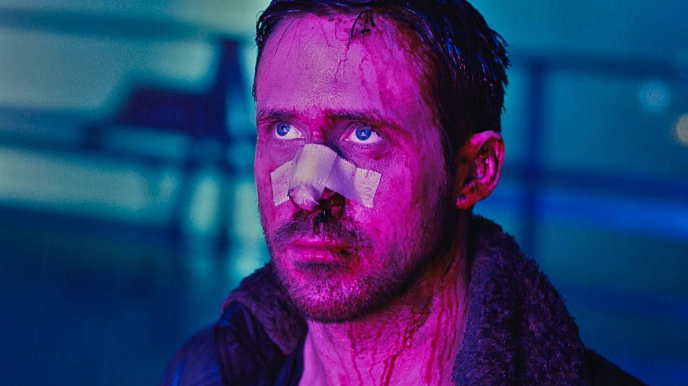

He is,,
Officer K grows up in a very dystopian world. His views have been twisted to fit that. He is a very morally grey character in a SCI-FI environment. This movie is recommended if you enjoy dystopia’s, mysteries, and of course, the original Blade Runner movie.

I enjoy Officer K because I have people I've met who are similar to him. The movie is also very special to me, Officer K is witty and a great Ryan Gosling character. Though, if it is your first movie of his, I'd start off with other ones. The source material may be dark at times, and the movie is one of his more gritty ones.